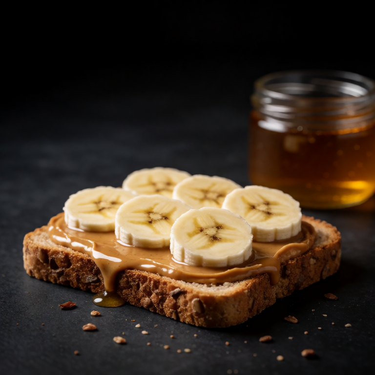
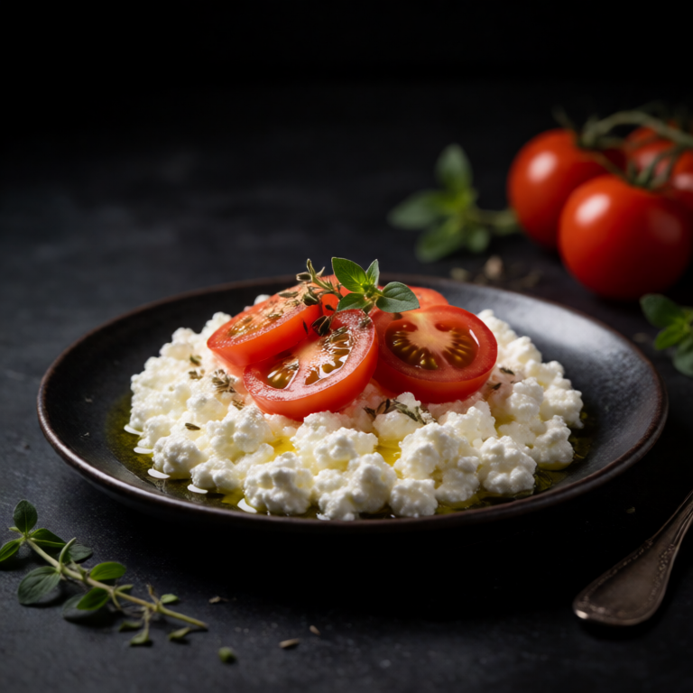
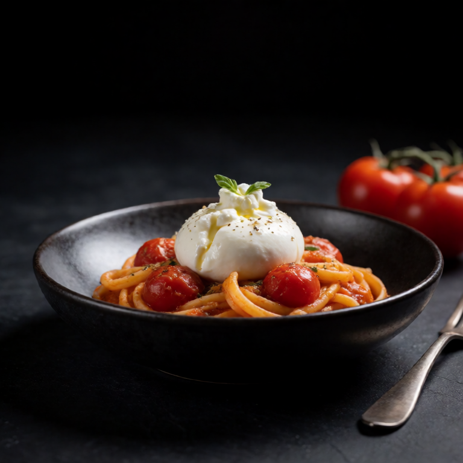
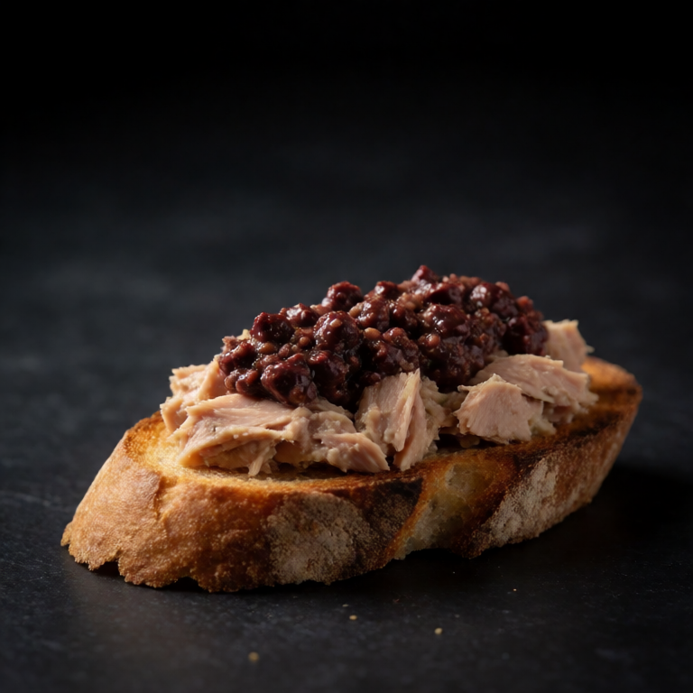
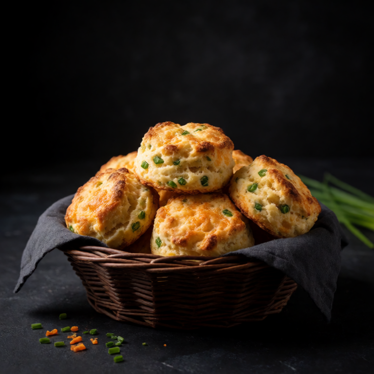
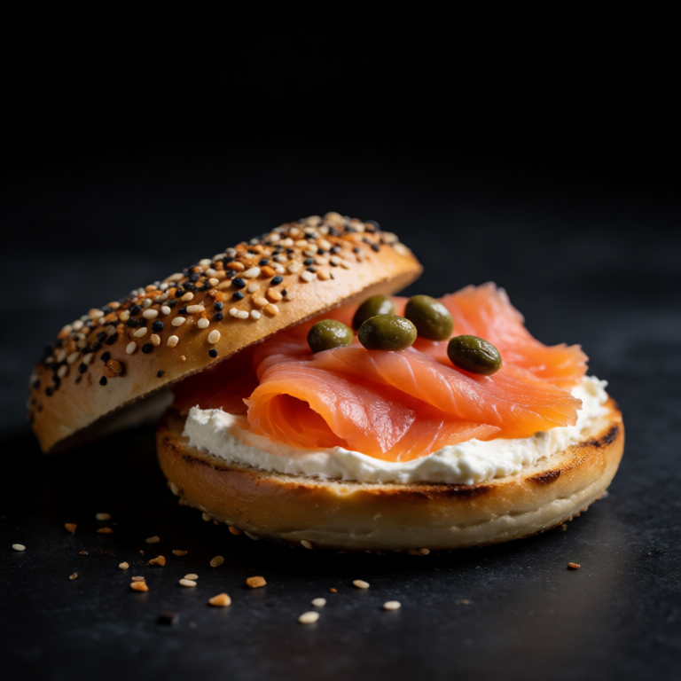
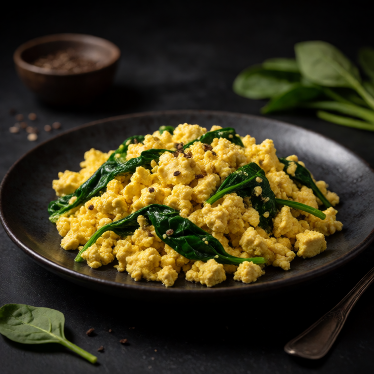
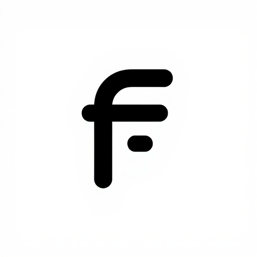

Today’s slop / 1755 min
Peanut Butter and Banana Toast
Crisp toast with peanut butter, banana, honey, and cinnamon is simple, warm, and ready in five minutes.
New slop tomorrow.One approachable recipe every day. Feeding yourself without turning it into a project.

Crisp toast with peanut butter, banana, honey, and cinnamon is simple, warm, and ready in five minutes.
New slop tomorrow.
Cottage Cheese and Tomato Plate
Oct 21, 2026 / 3 min / Snack Plate
Burrata and Tomato Pasta
Oct 20, 2026 / 20 min / Pasta
Tuna and Olive Tapenade Toast
Oct 19, 2026 / 7 min / Toast
Cheddar and Chive Biscuits
Oct 18, 2026 / 25 min / Snack
Smoked Salmon and Cream Cheese Bagel
Oct 17, 2026 / 8 min / Sandwich
Tofu Scramble with Spinach
Oct 16, 2026 / 15 min / EggsChoose the constraint, craving, or level of refusal currently running dinner.
Reader notes and photos are still open while the next poll batch is prepared.
A new question will appear after the editorial queue is refilled.Better than takeout. Silky egg ribbons in a gingery, savory broth.
Reopen this fileThe killings were not the disputed part. Criminal responsibility was.
mediaWhat Is Foidslop Media?Twilight. Nana. The Sims. Gossip Girl. Stardew Valley. The aisle is clearly labeled.
usernamesThe Anatomy of a Foidslop Usernamebunni. kitty. fae. mochi. rottingangel. wiredprincess. You know the account before you click it.

A daily recipe publication for one person and whatever kind of night this is.
Follow the daily slop via RSS